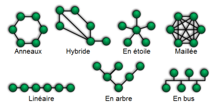

Topologie
Il existe plusieurs façons de relier un réseau, voici les plus utilisées

Les sous-réseaux
Un sous-réseau est une subdivision logique d'un réseau de taille plus importante. Le masque de sous-réseau permet de distinguer la partie de l'adresse commune à tous les appareils du sous-réseau et celle qui varie d'un appareil à l'autre.
Un sous-réseau correspond typiquement à un réseau local sous-jacent.
Historiquement, on appelle également sous-réseau chacun des réseaux connectés à Internet.
La subdivision d'un réseau en sous-réseaux permet de limiter la propagation des broadcast, ceux-ci restant limités au réseau local et leur gestion étant coûteuse en bande passante et en ressource au niveau des commutateurs réseau. Les routeurs sont utilisés pour la communication entre les machines appartenant à des sous-réseaux différents.